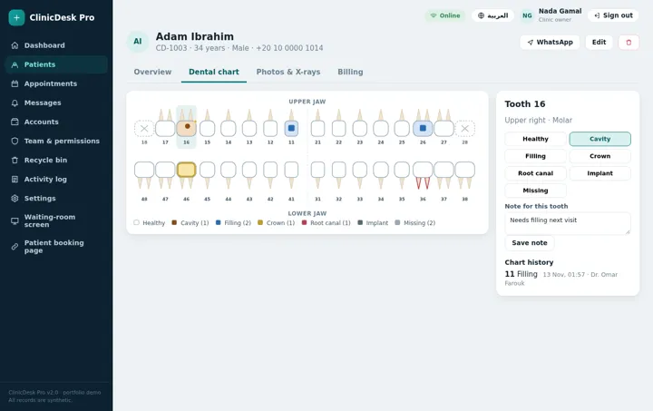
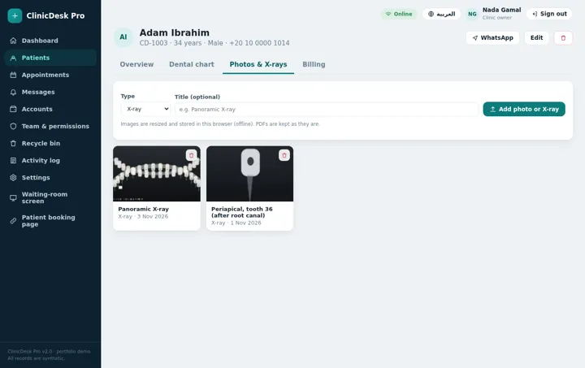
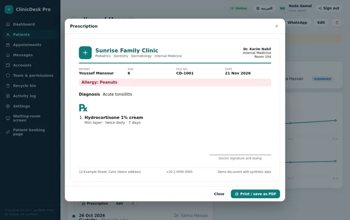
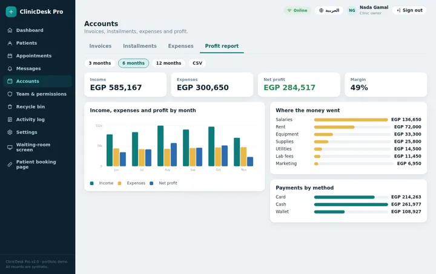
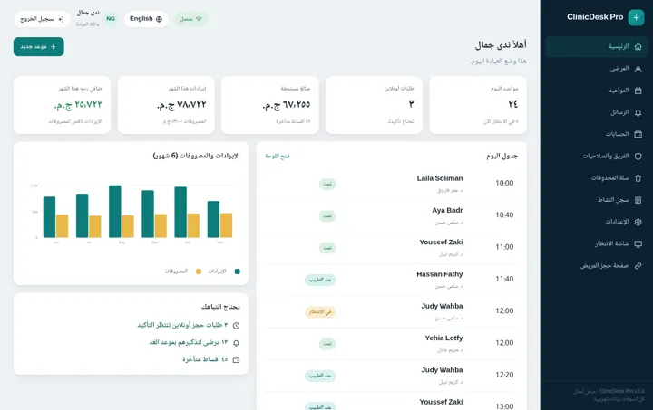
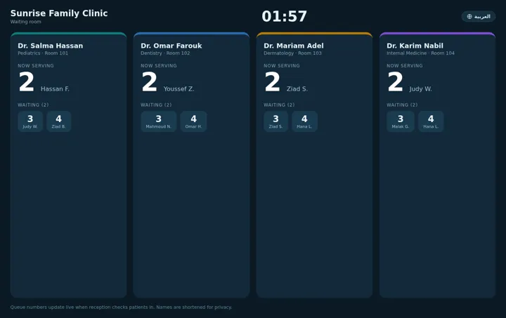
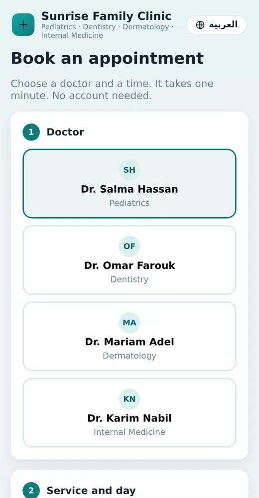

PORTFOLIO DEMO / BUILT / LIVE DEMO
ClinicDesk Pro
The clinic desk that works without internet.
 ACTUAL BUILD
ACTUAL BUILDClinicDesk Pro · Dashboard. Synthetic demo data.
The problem
Small clinics lose time and money on paper notebooks: double-booked slots, X-rays in a phone gallery, installments in someone's memory and no idea what the month really earned. Many clinic tools also stop working when the internet drops.
What was built
A patient booking page for phones that shows only free slots and sends a request the clinic confirms. A day board per doctor with queue numbers and a waiting-room screen. A patient file with visits, growth charts, a drug-allergy warning, photos and X-rays with a viewer, an interactive 32-tooth dental chart and a branded prescription in Arabic or English that prints to PDF. Accounts with VAT invoices, installment plans, expenses and a profit report. Roles with an editable permission matrix, a recycle bin and an activity log. Everything is saved on the device and the app keeps working offline.
The approach
This is the answer to a gap analysis against three commercial clinic products: each missing feature was built and then tested in a real browser. Booking, slot rules, invoice maths and installments are plain functions with unit tests. Data sits in IndexedDB behind a small store that checks permissions on every write, and a service worker caches the whole app. Online booking, confirming with a prefilled WhatsApp message, paying an installment, uploading an X-ray, deleting and restoring, role limits and saving an expense with the network switched off were all run end to end against the live site.
The result
A live demo you can sign into as owner, doctor, receptionist or accountant, switch to Arabic, and keep using with the network off. The repository, tests and screenshots sit alongside.
Evidence & production limits
Everything is stored in the browser you use, so each visitor has a private copy that resets with the Settings button. The patient booking page and the clinic app only meet in the same browser: a real clinic needs a server and database so a patient's phone and the reception PC share data. Roles are enforced inside the app and are not security; there are no passwords in the demo.
Built / demo. All people, X-ray images and amounts are synthetic, and no privacy or security audit has been done. Messages open ready-to-send in WhatsApp or SMS for a person to press send; automatic sending needs a WhatsApp Business or SMS provider account. Not built: multiple branches, recurring appointments, insurance, lab or e-prescription integration, patient login, online payment and DICOM files. The repository README lists the limits in full.
Next chapter
A server with Postgres and real sign-in, WhatsApp Business reminders sent automatically, multi-branch support and DICOM viewing would be the next implementation steps.
Inside the build
Open any preview to see the full capture. Captures show test or demonstration content. All records shown are demonstration content, not evidence of client use.






